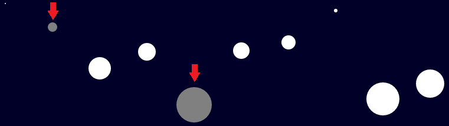
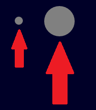

Thanks for helping out with this project! You will be shown 60 charts/graphs, and for each chart/graph you will be asked to compare the sizes of two data points (which are either marked with an asterisk (*) or are colored with the color grey) in the graph. (The page will tell you which to look for.) Below is an example, and at the bottom of the page is the start button.
Here is an example:

In the above example, I've pointed out the two dots that are gray with red arrows.
Let's look at these two in more detail:

Now, what percent of the smaller grey circle is the larger grey circle?
The smaller circle looks to be around ten percent (let's say) of the larger one, so my answer would be ten.
I would type ten into the box, and then I would click the submit button.
Please complete all 60 trials (I can't use the data otherwise), and once you're done you'll be brought to a screen that tells you how you did!